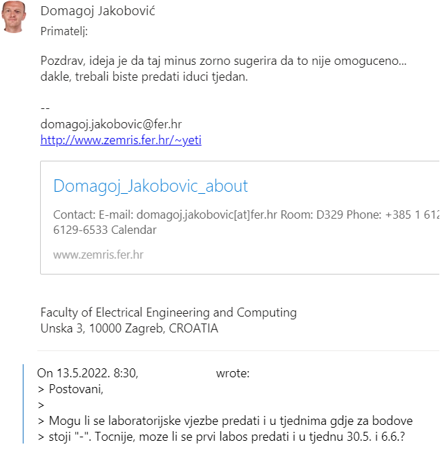

TheCrimsonChin Da, jedini uvjet je da su sve zadaće predane i ispravne, pa čak i da imaš 0 bodova iz zadaća, ni na jednom elementu ocjenjivanja ne postoji prag
JoKing što znači ispravne? hahahaha
Jel se moze za jedan rok predati dvije domace zadace
Prodajem laptop sa 8 jezgri
Jel cu dobit sve bodove iz labosa ako predam ovaj tjedan i onda odgovaram sljedeci?
Zero Posalji profesoru mail i zamoli ga, gotovo sigurno ce ti izaci u susret
jel samo ja nemam uopce mogucnost da se prijavim u grupu za labos na ferku
steker jel se grupa otvori tek kad predamo labos il sta
steker Pa samo se na ferku ode na Paralelno Programiranje -> Burza grupa -> Lab 3 i tam se odabere termin. Msm da je to otvoreno i bez predaje.
Retard00 ok da.. retard sam
steker dogodila mi se ista stvar lol
Jel treba uci u burzu grupa za Lab3 ako predajem ovaj tjedan 2. Dz? Malo je neintuitivno
bodNaUvidima yep, 3.lab
jel ovaj tjedan zadnji termin predaje za prvu vježbu ili se može još kasnije za 0 bodova?
sekiro Ovo je zadnji, provjereno, crtica mu znaci da je onemoguceno
Valentino provjereno? jesi pita profesora ili?
bjunolulz  Pitano prošli petak, zato kaze sljedeci tjedna, a to je zapravo ovaj
Ako 2. labos ne zelimo predati sada, onda ne trebamo nista ni uploadati do ovog roka u 23:00 nego do roka kad ce biti objavljen za predaju za manje bodova?
niknik da
niknik koji kurac je ovo, zasto na ferku pise da je rok 23:59?
Valentino e jbg, paralelno i diplomski 😁